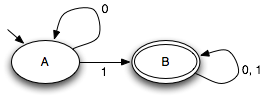
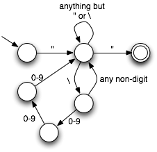

State machines are an abstract way of thinking about how computers and computations work. They are especially useful for describing reactive systems such as user interfaces that need to respond to events from the outside. A state machine has some internal state that can be changed in response to an external event. When a state machine receives an event from the external environment, it changes its state to a new state in accordance with a simple rule. It may also perform an action with significance to the external environment. In the classic version of state machines, this action can only be "accepting" the input.
A state machine is actually a formal, mathematical concept. In general, a state machine consists of the following things:
The state machine starts in state s0. As each input event arrives, its state changes as described by the state transition function.
For example, suppose that we have two states, A and B, and two input symbols, 0 and 1. And suppose s0 = A and δ(A,0) = 0, δ(A,1) = 1, δ(B,0) = 1, δ(B,1) = 1. Then this state machine will start in state A but will change irrevocably to state B if it ever sees an input of a 1. You can think of it as a "1 detector". If we make the state B a final state, then the machine will accept any sequence of events as long as it includes a 1.
Many real-world systems can be thought of as state machines. For example, computer processors are state machines. They receive signals from outside the chip, update some state on-chip, and produce outputs in response. There is a finite set of states that the processor chip can be in.
Another way to view a state machine is as a labeled, directed graph. The states are just nodes in the graph, and the state transition function defines edges. Edges are labeled with the corresponding events. For example, we can draw the "1 detector" state machine as follows:
The arrow coming into state A from nowhere indicates that A is the initial state of the machine. The double circle around B indicates that B is a final state of the machine. Notice that is possible to have transitions out of the final state; just because a state is "final" doesn't mean that the machine stops when it reaches it.
Here is a more elaborate state machine that checks whether a sequence of input characters are a valid Java string:
State machines are used throughout computer science. For example, state machines are used by compilers to break up programs efficiently into a sequence of words (tokens). They are also closely related to regular expressions, which are a way of compactly describing sets of strings.